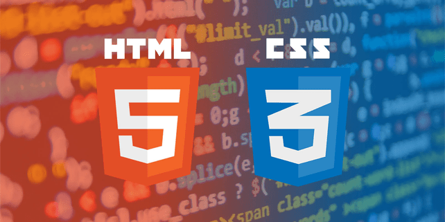

Mi App Ionic
Una aplicación diseñada para mostrar, organizar y gestionar mi CV de mi experiencia en la Universidad y en el Desarrollo de proyectos.
Versión
Versión 1.0.2
Última actualización: 27 de febrero de 2025
Descripción de la App

MiApp Ionic es una aplicación móvil que permite a los usuarios ver, analizar y comparar mis habilidades, experiencia tanto Universitaria y en el Desarrollo de proyectos. Con una interfaz intuitiva y personalizable, esta aplicación está diseñada para demostar a los usuarios mi experiencia y habilidades optenidos.
Desarrollador
Desarrollado por: Rene Ballinas Torres
Contacto
Si tienes preguntas, sugerencias o problemas, puedes contactarnos en:
Redes sociales: